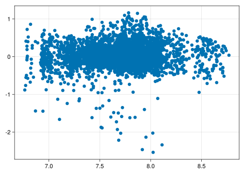
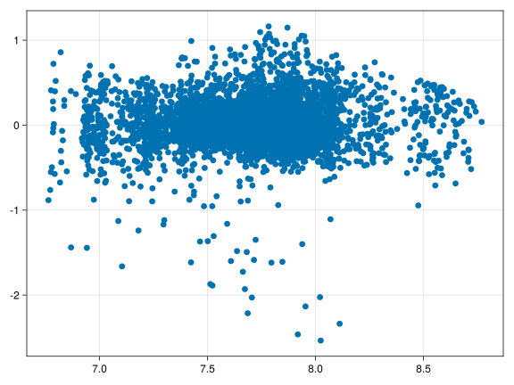
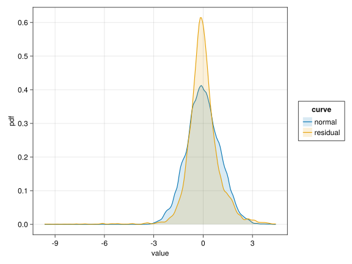
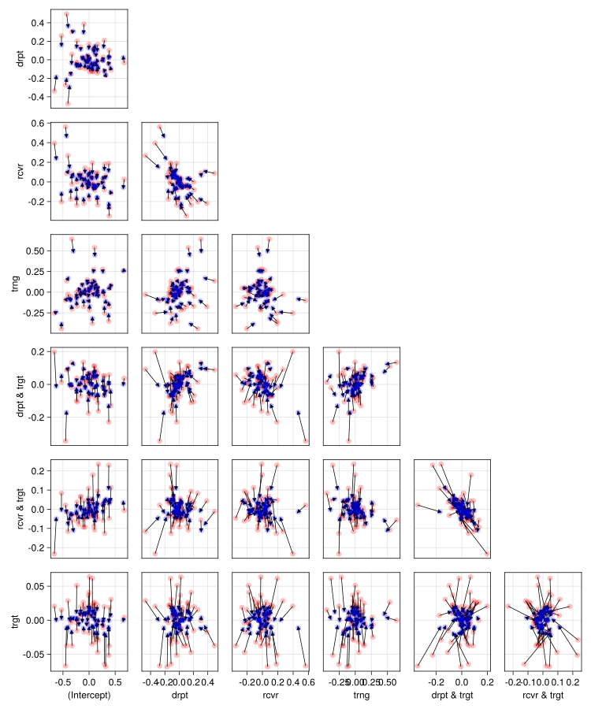

using AlgebraOfGraphics
using Arrow
using CairoMakie # graphics back-end
using CategoricalArrays
using Chain
using DataFrames
using DataFrameMacros # simplified dplyr-like data wrangling
using KernelDensity # density estimation
using MixedModels
using MixedModelsMakie # diagnostic plots
if contains(first(Sys.cpu_info()).model, "Intel")
using MKL # faster LAPACK on Intel processors
end
using ProgressMeter
using Random # random number generators
using RCall # call R from Julia
using StatsModels
using AlgebraOfGraphics: boxplot
using AlgebraOfGraphics: density
using MixedModelsMakie: qqnorm
using MixedModelsMakie: ridgeplot
using MixedModelsMakie: scatter
using MixedModelsMakie: caterpillar
ProgressMeter.ijulia_behavior(:clear);
CairoMakie.activate!(; type="svg");Antje Hofmann: Learning Syntactic Relations with the Mole Task (2)
RePsychLing in SMLP2022
Background
This version removes the outlier subject “p10” found in the version 1.
Children’s (age: 4-8 years)reaction times in a task teaching them syntactic relations.
Overview
- Original analysis is by Antje Hofmann.
- MixedModels.jl version
- Addition of new chunks illustrate
- selection of parsimonious LMM using random-effects PCA
- plotting conditional means
- illustration of borrowing strength
Readme
Variables
Subj: Participant ID (renamed fromID; random factor)Item: Word ID (random factor)age: 4 - 8 yearsBlock(within-Subj/within-Item):- 1st Learning
- 2nd Learning
- Disruption
- Recovery
Target(renamend fom targetness)- non-syllable target
- syllable target
rt: response time
The within-between-Item status of Block is not clear. Not all items were shown in the third block.
Setup
First attach the MixedModels.jl package and other packages for plotting. The CairoMakie.jl package allows the Makie graphics system [@Danisch2021] to generate high quality static images. Activate that package with the SVG (Scalable Vector Graphics) backend.
- The data are available as an arrow file.
- Most of preprocessing was done with R in RStudio (see Hofmann_Maulwurf.Rmd).
- Order of factor levels should be checked.
dat = DataFrame(Arrow.Table("./data/Hofmann_Maulwurf_rt.arrow"))
transform!(dat,
:Target => categorical => :Target,
:Block => categorical => :Block,
:age => (x -> x .- 6.210813) => :a1, # centered age (linear)
:rt => (x -> log.(x)) => :lrt)
describe(dat)
dat = filter(row -> row.Subj != "p10", dat)6,257 rows × 12 columns (omitted printing of 5 columns)
| Subj | Item | age | Block | Target | rt | trgt | |
|---|---|---|---|---|---|---|---|
| String? | String? | Float64? | Cat…? | Cat…? | Float64? | Float64? | |
| 1 | p01 | 02SG.ogg | 7.73 | 1st Learning | Non-target syllable | 3285.0 | -1.0 |
| 2 | p01 | 21SG.ogg | 7.73 | 1st Learning | Non-target syllable | 2873.0 | -1.0 |
| 3 | p01 | 20SG.ogg | 7.73 | 1st Learning | Non-target syllable | 2169.0 | -1.0 |
| 4 | p01 | 13SG.ogg | 7.73 | 1st Learning | Non-target syllable | 3133.0 | -1.0 |
| 5 | p01 | 32SG.ogg | 7.73 | 1st Learning | Non-target syllable | 5793.0 | -1.0 |
| 6 | p01 | 05SG.ogg | 7.73 | 1st Learning | Non-target syllable | 2064.0 | -1.0 |
| 7 | p01 | 27SG.ogg | 7.73 | 1st Learning | Non-target syllable | 4546.0 | -1.0 |
| 8 | p01 | 18SG.ogg | 7.73 | 1st Learning | Non-target syllable | 2949.0 | -1.0 |
| 9 | p01 | 23SG.ogg | 7.73 | 1st Learning | Non-target syllable | 2957.0 | -1.0 |
| 10 | p01 | 07SG.ogg | 7.73 | 1st Learning | Non-target syllable | 2508.0 | -1.0 |
| 11 | p01 | 29SG.ogg | 7.73 | 1st Learning | Non-target syllable | 2232.0 | -1.0 |
| 12 | p01 | 19SG.ogg | 7.73 | 1st Learning | Non-target syllable | 2517.0 | -1.0 |
| 13 | p01 | 14SG.ogg | 7.73 | 1st Learning | Non-target syllable | 2234.0 | -1.0 |
| 14 | p01 | 16SG.ogg | 7.73 | 1st Learning | Non-target syllable | 4272.0 | -1.0 |
| 15 | p01 | 15SG.ogg | 7.73 | 1st Learning | Non-target syllable | 3389.0 | -1.0 |
| 16 | p01 | 09SG.ogg | 7.73 | 1st Learning | Non-target syllable | 2510.0 | -1.0 |
| 17 | p01 | 25SG.ogg | 7.73 | 1st Learning | Non-target syllable | 5079.0 | -1.0 |
| 18 | p01 | 12SG.ogg | 7.73 | 1st Learning | Non-target syllable | 2622.0 | -1.0 |
| 19 | p01 | 23PA.ogg | 7.73 | 1st Learning | Target syllable | 2161.0 | 1.0 |
| 20 | p01 | 32PA.ogg | 7.73 | 1st Learning | Target syllable | 2141.0 | 1.0 |
| 21 | p01 | 19PA.ogg | 7.73 | 1st Learning | Target syllable | 2311.0 | 1.0 |
| 22 | p01 | 13PA.ogg | 7.73 | 1st Learning | Target syllable | 3049.0 | 1.0 |
| 23 | p01 | 04PA.ogg | 7.73 | 1st Learning | Target syllable | 2175.0 | 1.0 |
| 24 | p01 | 25PA.ogg | 7.73 | 1st Learning | Target syllable | 1750.0 | 1.0 |
| 25 | p01 | 20PA.ogg | 7.73 | 1st Learning | Target syllable | 2158.0 | 1.0 |
| 26 | p01 | 14PA.ogg | 7.73 | 1st Learning | Target syllable | 3274.0 | 1.0 |
| 27 | p01 | 11PA.ogg | 7.73 | 1st Learning | Target syllable | 2434.0 | 1.0 |
| 28 | p01 | 30PA.ogg | 7.73 | 1st Learning | Target syllable | 1859.0 | 1.0 |
| 29 | p01 | 15PA.ogg | 7.73 | 1st Learning | Target syllable | 2351.0 | 1.0 |
| 30 | p01 | 16PA.ogg | 7.73 | 1st Learning | Target syllable | 1853.0 | 1.0 |
| ⋮ | ⋮ | ⋮ | ⋮ | ⋮ | ⋮ | ⋮ | ⋮ |
- Note: Factor levels can also be set when contrasts are defined (see below).
- BoxCox check showed that reaction time
rt[ms] should be transformed tospeed[1/s] = [Hz] - Indicator variables for
TargetandBlockgenerated in R.
LMM analysis
Contrasts
contrasts = merge(
Dict(:Target => EffectsCoding()),
Dict(:Block => SeqDiffCoding()),
Dict(nm => Grouping() for nm in (:Subj, :Item))
);Varying only intercepts LMM m_voi
f_voi1 = @formula(lrt ~ 1 + Block * Target * a1 + (1 | Subj) + (1 | Item));
m_voi1 = fit(MixedModel, f_voi1, dat; contrasts)Minimizing 45 Time: 0:00:00 (11.39 ms/it)| Est. | SE | z | p | σ_Item | σ_Subj | |
|---|---|---|---|---|---|---|
| (Intercept) | 7.6826 | 0.0355 | 216.62 | <1e-99 | 0.0255 | 0.2508 |
| Block: 2nd Learning | -0.0761 | 0.0100 | -7.62 | <1e-13 | ||
| Block: Disruption | 0.0563 | 0.0121 | 4.63 | <1e-05 | ||
| Block: Recovery | -0.0536 | 0.0120 | -4.45 | <1e-05 | ||
| Target: Target syllable | -0.0129 | 0.0039 | -3.34 | 0.0008 | ||
| a1 | -0.1054 | 0.0314 | -3.36 | 0.0008 | ||
| Block: 2nd Learning & Target: Target syllable | -0.0038 | 0.0100 | -0.38 | 0.7025 | ||
| Block: Disruption & Target: Target syllable | -0.0334 | 0.0119 | -2.81 | 0.0050 | ||
| Block: Recovery & Target: Target syllable | 0.0103 | 0.0118 | 0.88 | 0.3814 | ||
| Block: 2nd Learning & a1 | 0.0237 | 0.0089 | 2.65 | 0.0081 | ||
| Block: Disruption & a1 | 0.0211 | 0.0106 | 1.99 | 0.0470 | ||
| Block: Recovery & a1 | -0.0127 | 0.0106 | -1.20 | 0.2305 | ||
| Target: Target syllable & a1 | -0.0040 | 0.0035 | -1.15 | 0.2494 | ||
| Block: 2nd Learning & Target: Target syllable & a1 | -0.0165 | 0.0089 | -1.85 | 0.0641 | ||
| Block: Disruption & Target: Target syllable & a1 | 0.0234 | 0.0106 | 2.21 | 0.0274 | ||
| Block: Recovery & Target: Target syllable & a1 | 0.0005 | 0.0105 | 0.04 | 0.9656 | ||
| Residual | 0.2919 |
Switch to indicator variables.
f_voi2 = @formula(lrt ~ 1 + (trng+drpt+rcvr) * trgt * a1 + (1 | Subj) + (1 | Item));
m_voi2 = fit(MixedModel, f_voi2, dat; contrasts)| Est. | SE | z | p | σ_Item | σ_Subj | |
|---|---|---|---|---|---|---|
| (Intercept) | 7.6826 | 0.0355 | 216.62 | <1e-99 | 0.0255 | 0.2508 |
| trng | -0.0761 | 0.0100 | -7.62 | <1e-13 | ||
| drpt | 0.0563 | 0.0121 | 4.63 | <1e-05 | ||
| rcvr | -0.0536 | 0.0120 | -4.45 | <1e-05 | ||
| trgt | -0.0129 | 0.0039 | -3.34 | 0.0008 | ||
| a1 | -0.1054 | 0.0314 | -3.36 | 0.0008 | ||
| trng & trgt | -0.0038 | 0.0100 | -0.38 | 0.7025 | ||
| drpt & trgt | -0.0334 | 0.0119 | -2.81 | 0.0050 | ||
| rcvr & trgt | 0.0103 | 0.0118 | 0.88 | 0.3814 | ||
| trng & a1 | 0.0237 | 0.0089 | 2.65 | 0.0081 | ||
| drpt & a1 | 0.0211 | 0.0106 | 1.99 | 0.0470 | ||
| rcvr & a1 | -0.0127 | 0.0106 | -1.20 | 0.2305 | ||
| trgt & a1 | -0.0040 | 0.0035 | -1.15 | 0.2494 | ||
| trng & trgt & a1 | -0.0165 | 0.0089 | -1.85 | 0.0641 | ||
| drpt & trgt & a1 | 0.0234 | 0.0106 | 2.21 | 0.0274 | ||
| rcvr & trgt & a1 | 0.0005 | 0.0105 | 0.04 | 0.9656 | ||
| Residual | 0.2919 |
They are equivalent.
A zero-correlation parameter LMM m_zcp
f_zcp1 = @formula(lrt ~ 1 + Block * Target * a1 + zerocorr(1 + Block * Target | Subj) + (1 + a1 | Item));
m_zcp1 = fit(MixedModel, f_zcp1, dat; contrasts);
show(issingular(m_zcp1))
VarCorr(m_zcp1)Minimizing 400 Time: 0:00:00 ( 1.40 ms/it)false| Column | Variance | Std.Dev | Corr. | |||||||
|---|---|---|---|---|---|---|---|---|---|---|
| Subj | (Intercept) | 0.0668230 | 0.2585014 | |||||||
| Block: 2nd Learning | 0.0305014 | 0.1746466 | . | |||||||
| Block: Disruption | 0.0165562 | 0.1286709 | . | . | ||||||
| Block: Recovery | 0.0135351 | 0.1163403 | . | . | . | |||||
| Target: Target syllable | 0.0002923 | 0.0170960 | . | . | . | . | ||||
| Block: 2nd Learning & Target: Target syllable | 0.0003620 | 0.0190256 | . | . | . | . | . | |||
| Block: Disruption & Target: Target syllable | 0.0023928 | 0.0489162 | . | . | . | . | . | . | ||
| Block: Recovery & Target: Target syllable | 0.0006254 | 0.0250086 | . | . | . | . | . | . | . | |
| Item | (Intercept) | 0.0007763 | 0.0278629 | |||||||
| a1 | 0.0005789 | 0.0240602 | -0.69 | |||||||
| Residual | 0.0724799 | 0.2692208 |
Again, check the equivalence.
f_zcp2 = @formula(lrt ~ 1 + (trng+drpt+rcvr) * trgt * a1 +
zerocorr(1 + (trng+drpt+rcvr) * trgt | Subj) + (1 + a1 | Item));
m_zcp2 = fit(MixedModel, f_zcp2, dat; contrasts);
show(issingular(m_zcp2))
VarCorr(m_zcp2)Minimizing 400 Time: 0:00:00 ( 0.81 ms/it)false| Column | Variance | Std.Dev | Corr. | |||||||
|---|---|---|---|---|---|---|---|---|---|---|
| Subj | (Intercept) | 0.0668230 | 0.2585014 | |||||||
| trng | 0.0305014 | 0.1746466 | . | |||||||
| drpt | 0.0165562 | 0.1286709 | . | . | ||||||
| rcvr | 0.0135351 | 0.1163403 | . | . | . | |||||
| trgt | 0.0002923 | 0.0170960 | . | . | . | . | ||||
| trng & trgt | 0.0003620 | 0.0190256 | . | . | . | . | . | |||
| drpt & trgt | 0.0023928 | 0.0489162 | . | . | . | . | . | . | ||
| rcvr & trgt | 0.0006254 | 0.0250086 | . | . | . | . | . | . | . | |
| Item | (Intercept) | 0.0007763 | 0.0278629 | |||||||
| a1 | 0.0005789 | 0.0240602 | -0.69 | |||||||
| Residual | 0.0724799 | 0.2692208 |
A complex parameter LMM m_cpx
m_cpx = let
form = @formula(lrt ~ 1 + trgt * (trng+drpt+rcvr) * a1 +
(1 + trgt * (trng+drpt+rcvr) | Subj) + (1 + a1 | Item));
fit(MixedModel, form, dat; contrasts);
end;
show(issingular(m_cpx)) # not ok
show(m_cpx.PCA[:Subj]) # not ok
show(MixedModels.likelihoodratiotest(m_zcp2, m_cpx))
VarCorr(m_cpx)Minimizing 2175 Time: 0:00:02 ( 1.02 ms/it)truePrincipal components based on correlation matrix (Intercept) 1.0 . . . . . . .
trgt -0.34 1.0 . . . . . .
trng 0.23 0.13 1.0 . . . . .
drpt -0.01 -0.08 0.3 1.0 . . . .
rcvr -0.35 0.01 -0.13 -0.45 1.0 . . .
trgt & trng 0.06 -0.53 -0.49 0.01 0.02 1.0 . .
trgt & drpt -0.16 0.06 0.44 0.42 -0.38 -0.64 1.0 .
trgt & rcvr 0.54 0.26 -0.36 -0.16 -0.09 0.13 -0.6 1.0
Normalized cumulative variances:[0.3301, 0.5516, 0.7425, 0.8686, 0.9467, 0.9935, 1.0, 1.0]
Component loadings
PC1 PC2 PC3 PC4 PC5 PC6 PC7 PC8
(Intercept) -0.12 0.6 0.28 -0.44 0.08 0.11 0.34 -0.47
trgt 0.14 -0.33 0.59 0.39 -0.21 -0.29 0.4 -0.29
trng 0.43 0.13 0.14 -0.48 -0.51 -0.39 -0.07 0.36
drpt 0.31 0.36 -0.2 0.43 -0.57 0.43 -0.06 -0.19
rcvr -0.21 -0.54 -0.08 -0.41 -0.38 0.51 0.3 -0.02
trgt & trng -0.43 0.2 -0.45 0.18 -0.24 -0.39 0.55 0.2
trgt & drpt 0.57 0.03 -0.09 0.04 0.4 0.26 0.57 0.34
trgt & rcvr -0.37 0.24 0.55 0.18 -0.08 0.31 -0.02 0.6Model Formulae
1: lrt ~ 1 + trng + drpt + rcvr + trgt + a1 + trng & trgt + drpt & trgt + rcvr & trgt + trng & a1 + drpt & a1 + rcvr & a1 + trgt & a1 + trng & trgt & a1 + drpt & trgt & a1 + rcvr & trgt & a1 + MixedModels.ZeroCorr((1 + trng + drpt + rcvr + trgt + trng & trgt + drpt & trgt + rcvr & trgt | Subj)) + (1 + a1 | Item)
2: lrt ~ 1 + trgt + trng + drpt + rcvr + a1 + trgt & trng + trgt & drpt + trgt & rcvr + trgt & a1 + trng & a1 + drpt & a1 + rcvr & a1 + trgt & trng & a1 + trgt & drpt & a1 + trgt & rcvr & a1 + (1 + trgt + trng + drpt + rcvr + trgt & trng + trgt & drpt + trgt & rcvr | Subj) + (1 + a1 | Item)
──────────────────────────────────────────────────
model-dof -2 logLik χ² χ²-dof P(>χ²)
──────────────────────────────────────────────────
[1] 28 2007.1480
[2] 56 1954.9674 52.1807 28 0.0037
──────────────────────────────────────────────────| Column | Variance | Std.Dev | Corr. | |||||||
|---|---|---|---|---|---|---|---|---|---|---|
| Subj | (Intercept) | 0.0677014 | 0.2601950 | |||||||
| trgt | 0.0003094 | 0.0175908 | -0.34 | |||||||
| trng | 0.0288510 | 0.1698559 | +0.23 | +0.13 | ||||||
| drpt | 0.0196604 | 0.1402154 | -0.01 | -0.08 | +0.30 | |||||
| rcvr | 0.0180753 | 0.1344443 | -0.35 | +0.01 | -0.13 | -0.45 | ||||
| trgt & trng | 0.0015784 | 0.0397285 | +0.06 | -0.53 | -0.49 | +0.01 | +0.02 | |||
| trgt & drpt | 0.0065070 | 0.0806658 | -0.16 | +0.06 | +0.44 | +0.42 | -0.38 | -0.64 | ||
| trgt & rcvr | 0.0030628 | 0.0553422 | +0.54 | +0.26 | -0.36 | -0.16 | -0.09 | +0.13 | -0.60 | |
| Item | (Intercept) | 0.0006168 | 0.0248352 | |||||||
| a1 | 0.0005574 | 0.0236089 | -0.82 | |||||||
| Residual | 0.0720702 | 0.2684589 |
The deviance improves, but we end up with an overparameterized LMM.
A parsimonious parameter LMM m_prm
We remove one of the VC for trgt * trng contrast interaction, that is one of the three interaction terms.
m_prm1 = let
form = @formula(lrt ~ 1 + trgt * (trng+drpt+rcvr) * a1 +
(1 + trgt *(drpt + rcvr) + trng | Subj) +
(1 + a1 | Item));
fit(MixedModel, form, dat; contrasts);
end;
show(issingular(m_prm1)) # ok
show(m_prm1.PCA[:Subj]) # not ok
show(MixedModels.likelihoodratiotest(m_zcp2, m_prm1, m_cpx))
VarCorr(m_prm1)Minimizing 2343 Time: 0:00:02 ( 0.94 ms/it)false
Principal components based on correlation matrix
(Intercept) 1.0 . . . . . .
trgt -0.33 1.0 . . . . .
drpt -0.01 -0.11 1.0 . . . .
rcvr -0.34 0.01 -0.45 1.0 . . .
trgt & drpt -0.18 -0.09 0.5 -0.43 1.0 . .
trgt & rcvr 0.54 0.28 -0.16 -0.09 -0.67 1.0 .
trng 0.21 0.08 0.3 -0.12 0.4 -0.38 1.0
Normalized cumulative variances:
[0.3474, 0.5944, 0.7601, 0.8925, 0.9713, 1.0, 1.0]
Component loadings
PC1 PC2 PC3 PC4 PC5 PC6 PC7
(Intercept) -0.1 0.68 0.24 -0.32 0.11 0.3 -0.52
trgt -0.12 -0.16 -0.87 -0.19 0.1 0.13 -0.37
drpt 0.44 0.23 -0.17 0.28 -0.78 0.02 -0.19
rcvr -0.29 -0.5 0.26 -0.34 -0.46 0.51 -0.07
trgt & drpt 0.58 -0.05 -0.05 0.11 0.33 0.7 0.21
trgt & rcvr -0.46 0.45 -0.28 0.07 -0.19 0.29 0.62
trng 0.38 0.1 -0.09 -0.81 -0.12 -0.24 0.34Model Formulae
1: lrt ~ 1 + trng + drpt + rcvr + trgt + a1 + trng & trgt + drpt & trgt + rcvr & trgt + trng & a1 + drpt & a1 + rcvr & a1 + trgt & a1 + trng & trgt & a1 + drpt & trgt & a1 + rcvr & trgt & a1 + MixedModels.ZeroCorr((1 + trng + drpt + rcvr + trgt + trng & trgt + drpt & trgt + rcvr & trgt | Subj)) + (1 + a1 | Item)
2: lrt ~ 1 + trgt + trng + drpt + rcvr + a1 + trgt & trng + trgt & drpt + trgt & rcvr + trgt & a1 + trng & a1 + drpt & a1 + rcvr & a1 + trgt & trng & a1 + trgt & drpt & a1 + trgt & rcvr & a1 + (1 + trgt + drpt + rcvr + trgt & drpt + trgt & rcvr + trng | Subj) + (1 + a1 | Item)
3: lrt ~ 1 + trgt + trng + drpt + rcvr + a1 + trgt & trng + trgt & drpt + trgt & rcvr + trgt & a1 + trng & a1 + drpt & a1 + rcvr & a1 + trgt & trng & a1 + trgt & drpt & a1 + trgt & rcvr & a1 + (1 + trgt + trng + drpt + rcvr + trgt & trng + trgt & drpt + trgt & rcvr | Subj) + (1 + a1 | Item)
──────────────────────────────────────────────────
model-dof -2 logLik χ² χ²-dof P(>χ²)
──────────────────────────────────────────────────
[1] 28 2007.1480
[2] 48 1962.8758 44.2722 20 0.0014
[3] 56 1954.9674 7.9084 8 0.4425
──────────────────────────────────────────────────| Column | Variance | Std.Dev | Corr. | ||||||
|---|---|---|---|---|---|---|---|---|---|
| Subj | (Intercept) | 0.0677944 | 0.2603736 | ||||||
| trgt | 0.0003053 | 0.0174720 | -0.33 | ||||||
| drpt | 0.0195623 | 0.1398654 | -0.01 | -0.11 | |||||
| rcvr | 0.0180741 | 0.1344400 | -0.34 | +0.01 | -0.45 | ||||
| trgt & drpt | 0.0049508 | 0.0703616 | -0.18 | -0.09 | +0.50 | -0.43 | |||
| trgt & rcvr | 0.0029409 | 0.0542303 | +0.54 | +0.28 | -0.16 | -0.09 | -0.67 | ||
| trng | 0.0297733 | 0.1725493 | +0.21 | +0.08 | +0.30 | -0.12 | +0.40 | -0.38 | |
| Item | (Intercept) | 0.0006104 | 0.0247062 | ||||||
| a1 | 0.0005463 | 0.0233724 | -0.82 | ||||||
| Residual | 0.0722849 | 0.2688584 |
We don’t lose goodness of fit, but are still overparameterized. We remove CPs for Target.
m_prm2 = let
form = @formula(lrt ~ 1 + trgt * (trng+drpt+rcvr) * a1 +
(1 + drpt + rcvr + trng + drpt&trgt + rcvr&trgt | Subj) +
zerocorr(0 + trgt | Subj) +
(1 + a1 | Item));
fit(MixedModel, form, dat; contrasts);
end;
show(issingular(m_prm2)) # ok
show(m_prm2.PCA[:Subj]) # ok
show(MixedModels.likelihoodratiotest(m_zcp2, m_prm2, m_cpx))
VarCorr(m_prm2)Minimizing 1046 Time: 0:00:00 ( 0.89 ms/it)false
Principal components based on correlation matrix
(Intercept) 1.0 . . . . . .
drpt -0.01 1.0 . . . . .
rcvr -0.34 -0.45 1.0 . . . .
trng 0.21 0.3 -0.12 1.0 . . .
drpt & trgt -0.12 0.53 -0.44 0.42 1.0 . .
rcvr & trgt 0.5 -0.2 -0.09 -0.44 -0.67 1.0 .
trgt 0.0 0.0 0.0 0.0 0.0 0.0 1.0
Normalized cumulative variances:
[0.3523, 0.5915, 0.7343, 0.869, 0.9457, 0.9836, 1.0]
Component loadings
PC1 PC2 PC3 PC4 PC5 PC6 PC7
(Intercept) -0.08 0.65 0.0 -0.44 0.14 -0.52 -0.3
drpt 0.45 0.22 0.0 0.34 -0.76 -0.17 -0.18
rcvr -0.3 -0.54 0.0 -0.36 -0.41 -0.54 0.17
trng 0.41 0.07 0.0 -0.73 -0.22 0.44 0.23
drpt & trgt 0.58 -0.03 0.0 0.11 0.35 -0.46 0.56
rcvr & trgt -0.46 0.48 0.0 0.14 -0.25 0.09 0.69
trgt 0.0 0.0 1.0 0.0 0.0 0.0 0.0Model Formulae
1: lrt ~ 1 + trng + drpt + rcvr + trgt + a1 + trng & trgt + drpt & trgt + rcvr & trgt + trng & a1 + drpt & a1 + rcvr & a1 + trgt & a1 + trng & trgt & a1 + drpt & trgt & a1 + rcvr & trgt & a1 + MixedModels.ZeroCorr((1 + trng + drpt + rcvr + trgt + trng & trgt + drpt & trgt + rcvr & trgt | Subj)) + (1 + a1 | Item)
2: lrt ~ 1 + trgt + trng + drpt + rcvr + a1 + trgt & trng + trgt & drpt + trgt & rcvr + trgt & a1 + trng & a1 + drpt & a1 + rcvr & a1 + trgt & trng & a1 + trgt & drpt & a1 + trgt & rcvr & a1 + (1 + drpt + rcvr + trng + drpt & trgt + rcvr & trgt | Subj) + MixedModels.ZeroCorr((0 + trgt | Subj)) + (1 + a1 | Item)
3: lrt ~ 1 + trgt + trng + drpt + rcvr + a1 + trgt & trng + trgt & drpt + trgt & rcvr + trgt & a1 + trng & a1 + drpt & a1 + rcvr & a1 + trgt & trng & a1 + trgt & drpt & a1 + trgt & rcvr & a1 + (1 + trgt + trng + drpt + rcvr + trgt & trng + trgt & drpt + trgt & rcvr | Subj) + (1 + a1 | Item)
──────────────────────────────────────────────────
model-dof -2 logLik χ² χ²-dof P(>χ²)
──────────────────────────────────────────────────
[1] 28 2007.1480
[2] 42 1969.2274 37.9206 14 0.0005
[3] 56 1954.9674 14.2601 14 0.4305
──────────────────────────────────────────────────| Column | Variance | Std.Dev | Corr. | ||||||
|---|---|---|---|---|---|---|---|---|---|
| Subj | (Intercept) | 0.0678799 | 0.2605376 | ||||||
| drpt | 0.0195943 | 0.1399797 | -0.01 | ||||||
| rcvr | 0.0181227 | 0.1346205 | -0.34 | -0.45 | |||||
| trng | 0.0299041 | 0.1729279 | +0.21 | +0.30 | -0.12 | ||||
| drpt & trgt | 0.0048307 | 0.0695033 | -0.12 | +0.53 | -0.44 | +0.42 | |||
| rcvr & trgt | 0.0024149 | 0.0491413 | +0.50 | -0.20 | -0.09 | -0.44 | -0.67 | ||
| trgt | 0.0003212 | 0.0179218 | . | . | . | . | . | . | |
| Item | (Intercept) | 0.0006369 | 0.0252365 | ||||||
| a1 | 0.0005641 | 0.0237505 | -0.76 | ||||||
| Residual | 0.0723237 | 0.2689307 |
Check the Item-related CP. It is very large, might be spurious.
m_prm3 = let
form = @formula(lrt ~ 1 + trgt * (trng+drpt+rcvr) * a1 +
(1 + drpt + rcvr + trng + drpt&trgt + rcvr&trgt | Subj) +
zerocorr(0 + trgt | Subj) +
zerocorr(1 + a1 | Item));
fit(MixedModel, form, dat; contrasts);
end;
show(issingular(m_prm3)) # ok
show(m_prm3.PCA[:Subj]) # ok
show(MixedModels.likelihoodratiotest(m_zcp2, m_prm3, m_prm2, m_cpx))
VarCorr(m_prm3)Minimizing 910 Time: 0:00:00 ( 1.00 ms/it)false
Principal components based on correlation matrix
(Intercept) 1.0 . . . . . .
drpt -0.01 1.0 . . . . .
rcvr -0.34 -0.45 1.0 . . . .
trng 0.21 0.31 -0.11 1.0 . . .
drpt & trgt -0.13 0.53 -0.44 0.43 1.0 . .
rcvr & trgt 0.54 -0.17 -0.13 -0.45 -0.64 1.0 .
trgt 0.0 0.0 0.0 0.0 0.0 0.0 1.0
Normalized cumulative variances:
[0.349, 0.5947, 0.7375, 0.873, 0.9483, 0.9846, 1.0]
Component loadings
PC1 PC2 PC3 PC4 PC5 PC6 PC7
(Intercept) -0.1 0.64 0.0 -0.45 0.11 -0.48 -0.36
drpt 0.45 0.23 0.0 0.33 -0.76 -0.13 -0.19
rcvr -0.28 -0.54 0.0 -0.36 -0.43 -0.54 0.15
trng 0.41 0.06 0.0 -0.73 -0.2 0.43 0.28
drpt & trgt 0.58 -0.01 0.0 0.12 0.35 -0.52 0.5
rcvr & trgt -0.45 0.49 0.0 0.13 -0.23 0.03 0.7
trgt 0.0 0.0 1.0 0.0 0.0 0.0 0.0Model Formulae
1: lrt ~ 1 + trng + drpt + rcvr + trgt + a1 + trng & trgt + drpt & trgt + rcvr & trgt + trng & a1 + drpt & a1 + rcvr & a1 + trgt & a1 + trng & trgt & a1 + drpt & trgt & a1 + rcvr & trgt & a1 + MixedModels.ZeroCorr((1 + trng + drpt + rcvr + trgt + trng & trgt + drpt & trgt + rcvr & trgt | Subj)) + (1 + a1 | Item)
2: lrt ~ 1 + trgt + trng + drpt + rcvr + a1 + trgt & trng + trgt & drpt + trgt & rcvr + trgt & a1 + trng & a1 + drpt & a1 + rcvr & a1 + trgt & trng & a1 + trgt & drpt & a1 + trgt & rcvr & a1 + (1 + drpt + rcvr + trng + drpt & trgt + rcvr & trgt | Subj) + MixedModels.ZeroCorr((0 + trgt | Subj)) + MixedModels.ZeroCorr((1 + a1 | Item))
3: lrt ~ 1 + trgt + trng + drpt + rcvr + a1 + trgt & trng + trgt & drpt + trgt & rcvr + trgt & a1 + trng & a1 + drpt & a1 + rcvr & a1 + trgt & trng & a1 + trgt & drpt & a1 + trgt & rcvr & a1 + (1 + drpt + rcvr + trng + drpt & trgt + rcvr & trgt | Subj) + MixedModels.ZeroCorr((0 + trgt | Subj)) + (1 + a1 | Item)
4: lrt ~ 1 + trgt + trng + drpt + rcvr + a1 + trgt & trng + trgt & drpt + trgt & rcvr + trgt & a1 + trng & a1 + drpt & a1 + rcvr & a1 + trgt & trng & a1 + trgt & drpt & a1 + trgt & rcvr & a1 + (1 + trgt + trng + drpt + rcvr + trgt & trng + trgt & drpt + trgt & rcvr | Subj) + (1 + a1 | Item)
──────────────────────────────────────────────────
model-dof -2 logLik χ² χ²-dof P(>χ²)
──────────────────────────────────────────────────
[1] 28 2007.1480
[2] 41 1976.6189 30.5292 13 0.0039
[3] 42 1969.2274 7.3914 1 0.0066
[4] 56 1954.9674 14.2601 14 0.4305
──────────────────────────────────────────────────| Column | Variance | Std.Dev | Corr. | ||||||
|---|---|---|---|---|---|---|---|---|---|
| Subj | (Intercept) | 0.0680943 | 0.2609489 | ||||||
| drpt | 0.0195339 | 0.1397637 | -0.01 | ||||||
| rcvr | 0.0181222 | 0.1346187 | -0.34 | -0.45 | |||||
| trng | 0.0299507 | 0.1730628 | +0.21 | +0.31 | -0.11 | ||||
| drpt & trgt | 0.0044852 | 0.0669717 | -0.13 | +0.53 | -0.44 | +0.43 | |||
| rcvr & trgt | 0.0021055 | 0.0458857 | +0.54 | -0.17 | -0.13 | -0.45 | -0.64 | ||
| trgt | 0.0003092 | 0.0175841 | . | . | . | . | . | . | |
| Item | (Intercept) | 0.0006590 | 0.0256719 | ||||||
| a1 | 0.0005548 | 0.0235549 | . | ||||||
| Residual | 0.0723439 | 0.2689683 |
Perhaps not. We stay with LMM m_prm2
Compare models with goodness-of-fit statistics.
let mods = [m_zcp2, m_prm2, m_prm1, m_cpx];
DataFrame(;
model=[:m_zcp2, :m_prm2, :m_prm1, :m_cpx],
pars=dof.(mods),
geomdof=round.(Int, (sum ∘ leverage).(mods)),
AIC=round.(Int, aic.(mods)),
AICc=round.(Int, aicc.(mods)),
BIC=round.(Int, bic.(mods)),
)
end4 rows × 6 columns
| model | pars | geomdof | AIC | AICc | BIC | |
|---|---|---|---|---|---|---|
| Symbol | Int64 | Int64 | Int64 | Int64 | Int64 | |
| 1 | m_zcp2 | 28 | 293 | 2063 | 2063 | 2252 |
| 2 | m_prm2 | 42 | 279 | 2053 | 2054 | 2336 |
| 3 | m_prm1 | 48 | 274 | 2059 | 2060 | 2382 |
| 4 | m_cpx | 56 | 281 | 2067 | 2068 | 2444 |
LMM m_prm2 is a defensible solution according to \(\Delta\) AIC, \(\Delta\) BIC suggests we should not bother with CPs.
coeftable(m_prm2)| Coef. | Std. Error | z | Pr(> | |
|---|---|---|---|---|
| (Intercept) | 7.67584 | 0.036791 | 208.63 | <1e-99 |
| trgt | -0.0133074 | 0.00441784 | -3.01 | 0.0026 |
| trng | -0.064455 | 0.0259933 | -2.48 | 0.0132 |
| drpt | 0.05152 | 0.0227753 | 2.26 | 0.0237 |
| rcvr | -0.0464656 | 0.0220855 | -2.10 | 0.0354 |
| a1 | -0.108394 | 0.032637 | -3.32 | 0.0009 |
| trgt & trng | 0.000837694 | 0.00928892 | 0.09 | 0.9281 |
| trgt & drpt | -0.0307301 | 0.0147661 | -2.08 | 0.0374 |
| trgt & rcvr | 0.008655 | 0.0129751 | 0.67 | 0.5047 |
| trgt & a1 | -0.00701298 | 0.00399037 | -1.76 | 0.0788 |
| trng & a1 | 0.0279912 | 0.023092 | 1.21 | 0.2255 |
| drpt & a1 | 0.0273076 | 0.020171 | 1.35 | 0.1758 |
| rcvr & a1 | -0.0167544 | 0.0195892 | -0.86 | 0.3924 |
| trgt & trng & a1 | -0.00608885 | 0.00831707 | -0.73 | 0.4641 |
| trgt & drpt & a1 | 0.0299431 | 0.013175 | 2.27 | 0.0230 |
| trgt & rcvr & a1 | -0.0050921 | 0.0116144 | -0.44 | 0.6611 |
Diagnostic plots
Various visualizations are used to check whether or not data are defensibly modeled with an LMM. They may lead to removal of outliers, transformations of the dependent variable, and deliver valuable heuristic information to be followed up with exploratory post-hoc analyses or ideally replication of new insights gained this way. In practice, it appears that only severe violations will stop people from reporting a model.
Residuals over fitted
scatter(fitted(m_prm2), residuals(m_prm2))
Looks like we missed some fast response times.
Q-Q plot
qqnorm(m_prm2; qqline=:none)
Hm?
Residual distributions: observed vs. theoretical
Curves for residulas based on observed and theoretical values should correspond.
Code
let
n = nrow(dat)
dat_rz = (;
value=vcat(residuals(m_prm2) ./ std(residuals(m_prm2)), randn(n)),
curve=repeat(["residual", "normal"]; inner=n),
)
draw(
data(dat_rz) *
mapping(:value; color=:curve) *
density(; bandwidth=0.1);
)
end
They are a bit too narrow.
Conditional means of random effects
Borrowing-strength plots
Shrinkage refers to the adjustment of subject-level or item-level predictions by taking population estimates into account. The further a subject’s/item’s estimate is from the fixed effect or the more variable or less reliable the subject’s/item’s estimate, the more the prediction will be shrunk towards the population estimate. Alternative terms for shrinkage are “borrowing strength” (Tukey) and regularization. My favorite is actually Tukey’s because indeed we borrow strength from the population estimates to make predictions for individual subjects’ effects. The goal of this section to illustrate the results of borrowing strength.
Subject-related conditional means of random effects revealed information about individual differences beyond fixed effects. Would these results also be visible in unconditional means, that is when we compute GM and experimental effects within subjects (i.e., as fixed effects) without borrowing strength from the population estimates?
In the following plots, effect estimates based on alone on each subject’s data (i.e., no pooling of data, no borrowing of strength) are plotted in pink and the subjects’ conditional means shown in the caterpillar plots are plotted in blue. The arrows indicate how much a subject’s prediction is changed by borrowing strength from knowledge of the population estimates.
Code
shrinkageplot!(Figure(; resolution=(1000, 1200)), m_prm2)
Outlier subject is gone.
cm = raneftables(m_prm2);
sort(DataFrame(cm.Subj), ["(Intercept)", :trng, "drpt & trgt"])
sort(DataFrame(cm.Subj), :trng)51 rows × 8 columns (omitted printing of 1 columns)
| Subj | (Intercept) | drpt | rcvr | trng | drpt & trgt | rcvr & trgt | |
|---|---|---|---|---|---|---|---|
| String | Float64 | Float64 | Float64 | Float64 | Float64 | Float64 | |
| 1 | p14 | -0.528324 | 0.159668 | -0.11823 | -0.385557 | 0.0520892 | -0.00338217 |
| 2 | p76 | 0.0647567 | -0.0954255 | 0.0966011 | -0.317907 | -0.0618802 | 0.0540731 |
| 3 | p36 | 0.373846 | -0.0446122 | 0.114027 | -0.27732 | -0.129951 | 0.109572 |
| 4 | p02 | -0.628904 | -0.185899 | 0.239488 | -0.241857 | -0.0114092 | -0.0501408 |
| 5 | p39 | 0.29294 | -0.123349 | 0.13189 | -0.189152 | -0.066286 | 0.0443986 |
| 6 | p74 | -0.334415 | -0.035495 | 0.0588412 | -0.177372 | -0.00144979 | -0.0244251 |
| 7 | p67 | 0.010264 | 0.00522262 | -0.0257957 | -0.17184 | 0.00596836 | 0.0146036 |
| 8 | p59 | 0.376655 | 0.0232026 | -0.253902 | -0.137976 | 0.00687326 | 0.0472289 |
| 9 | p06 | -0.23881 | 0.140854 | 0.0320262 | -0.128497 | -0.0423162 | 0.0148063 |
| 10 | p54 | 0.319236 | -0.162326 | 0.0453618 | -0.11046 | -0.0451093 | 0.0524689 |
| 11 | p42 | -0.105173 | 0.295907 | -0.174945 | -0.107407 | 0.097432 | -0.0080525 |
| 12 | p23 | -0.0173957 | -0.0770707 | 0.0642136 | -0.10535 | -0.092277 | 0.0454162 |
| 13 | p30 | -0.349379 | -0.153176 | -0.0891827 | -0.0983391 | 0.00106997 | -0.0225797 |
| 14 | p45 | -0.37458 | -0.294249 | 0.154626 | -0.0891524 | -0.00551736 | -0.0454836 |
| 15 | p84 | -0.432459 | -0.215862 | 0.466636 | -0.0826036 | -0.170944 | -0.0131033 |
| 16 | p83 | -0.23897 | -0.0537414 | -0.162428 | -0.0772359 | 0.0230379 | -0.0185068 |
| 17 | p72 | 0.177022 | -0.0778591 | -0.0337727 | -0.050307 | -0.0629902 | 0.0679024 |
| 18 | p55 | -0.24107 | -0.0677106 | -0.0693407 | -0.0486893 | -0.0284249 | -0.0116176 |
| 19 | p27 | -0.0132471 | -0.0111105 | 0.0152194 | -0.0443803 | -0.0441333 | 0.0254028 |
| 20 | p12 | -0.160655 | -0.0495311 | 0.0628742 | -0.0434915 | -0.035479 | 0.008787 |
| 21 | p69 | 0.0806824 | -0.0490931 | -0.0696183 | -0.031722 | 0.0442688 | 0.0257352 |
| 22 | p04 | 0.141053 | -0.0468633 | 0.0393748 | -0.0239669 | -0.0124749 | 0.0138382 |
| 23 | p77 | 0.150814 | -0.101447 | 0.0587759 | -0.0141875 | -0.063646 | 0.0327988 |
| 24 | p79 | -0.0709229 | -0.0186399 | 0.0306197 | -0.0134233 | -0.0220473 | 0.000433684 |
| 25 | p53 | -0.112959 | 0.0249278 | 0.0212294 | -0.00152395 | 0.0380186 | -0.0235069 |
| 26 | p08 | -0.160324 | 0.112641 | 0.0336326 | 0.00560269 | 0.0106341 | -0.000934369 |
| 27 | p25 | 0.278464 | 0.141352 | -0.0476386 | 0.00933779 | -0.0249919 | 0.0312205 |
| 28 | p64 | 0.266069 | 0.00293255 | 0.0344024 | 0.0113387 | -0.017375 | 0.0242799 |
| 29 | p28 | 0.151957 | -0.00471725 | -0.159589 | 0.0136812 | 0.0485805 | -0.00713675 |
| 30 | p57 | 0.00152921 | -0.00177898 | -0.01991 | 0.0196857 | 0.0370759 | -0.017444 |
| ⋮ | ⋮ | ⋮ | ⋮ | ⋮ | ⋮ | ⋮ | ⋮ |